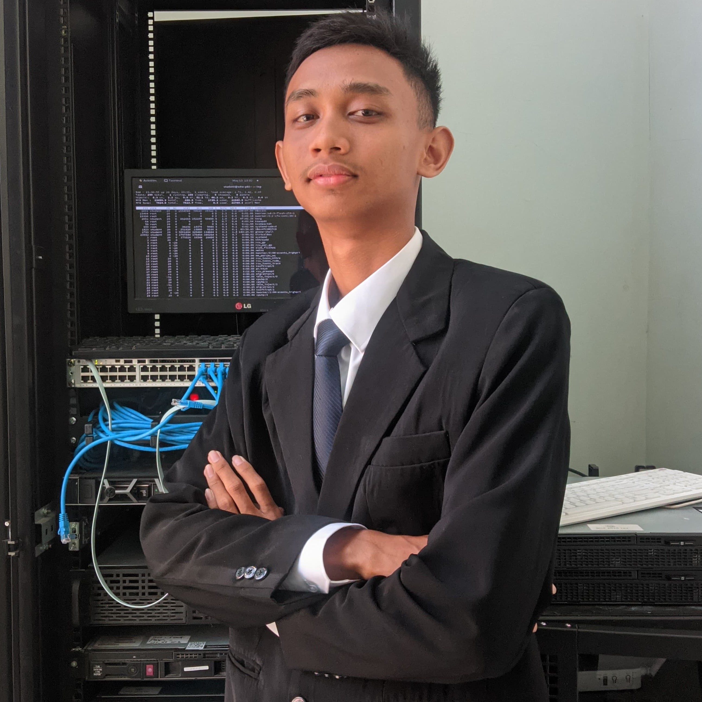
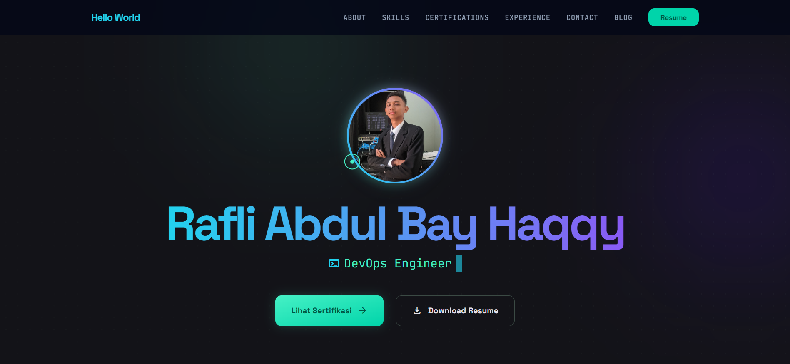
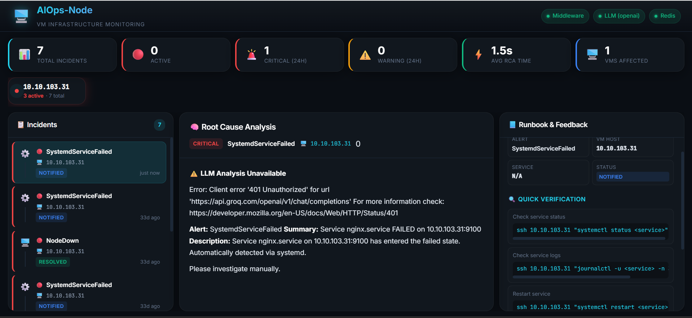

Berfokus pada penyediaan sistem dengan ketersediaan tinggi (high-availability), orkestrasi kontainer, serta otomatisasi infrastruktur cloud-native yang aman dan efisien.

Saya adalah seorang System Engineer yang berdomisili di Jakarta, Indonesia. Fokus keahlian saya terletak pada arsitektur sistem, kontainerisasi, dan otomatisasi deployment infrastruktur. Saya sangat antusias mengubah arsitektur warisan (legacy) menjadi sistem berbasis cloud-native yang terstandarisasi, aman, serta memiliki performa tinggi.
Melalui peran saya di industri, saya terbiasa menangani instalasi, konfigurasi, dan pemeliharaan cluster skala enterprise. Saya selalu percaya bahwa pendekatan berbasis IaC dan implementasi CI/CD yang tepat dapat mempercepat siklus rilis sistem dan meminimalkan kesalahan operasional.
"Otomatisasi bukan sekadar menulis script, melainkan membangun keandalan sistem agar bisnis dapat berjalan tanpa gangguan operasional."
Saat ini saya aktif mendalami ekosistem enterprise OpenShift dari Red Hat, otomatisasi menggunakan Ansible, serta penerapan sistem GitOps yang tangguh menggunakan berbagai tools pendukung.
| No | Jenjang Pendidikan | Nama Institusi | Jurusan / Program Studi | Periode Tahun |
|---|---|---|---|---|
| 1 | Universitas / S1 | Universitas Siber Asia | Infomatika | 2025 - Sekarang |
| 2 | SMK | SMK Negeri 1 Adiwerna | TKJ (Teknik Komputer dan Jaringan) | 2021 - 2024 |
Bertanggung jawab penuh atas pemeliharaan, stabilitas, dan upgrade infrastruktur kontainer klien korporat dengan tugas-tugas sebagai berikut:
Mengelola operasi server dan infrastruktur jaringan tingkat menengah untuk meminimalkan waktu henti (downtime):
Mendukung delivery training teknologi IT tingkat enterprise serta pengelolaan armada server pusat data lokal:
Mempelajari implementasi metodologi DevOps dan monitoring sistem dalam siklus rilis perangkat lunak:
Selain keahlian teknis pemrograman dan sistem, saya senantiasa mengasah soft-skills berikut untuk menunjang produktivitas kerja:
Mampu menganalisis akar masalah server dan infrastruktur secara kritis guna menemukan solusi terbaik.
Berpengalaman menjalin koordinasi yang harmonis dengan pengembang aplikasi, tim keamanan, dan manajemen.
Terbiasa menyampaikan materi teknis yang kompleks dalam bentuk training sistem yang mudah dipahami.
Dapat mengatur prioritas pengerjaan laporan PM/CM serta penanganan support tiket darurat secara efektif.

Website Portfolio Pribadi Versi 1 dibuat untuk menampilkan informasi lengkap mengenai identitas profesional, pendidikan, pengalaman kerja, keahlian, sertifikasi, pelatihan, hasil karya, dan kontak. Website ini bertujuan sebagai media personal branding sekaligus dokumentasi digital yang dapat digunakan untuk kebutuhan akademik maupun profesional.

AIOps Monitoring System adalah sistem monitoring yang dibuat untuk membantu memantau log dan metrik aplikasi secara real-time. Project ini menggunakan Node.js, Prometheus, Grafana, dan Loki untuk mengumpulkan data, menampilkan visualisasi, serta membantu melihat kondisi aplikasi dan infrastruktur dengan lebih mudah. Dengan sistem ini, proses pengecekan performa, deteksi anomali, dan analisis insiden bisa dilakukan lebih cepat, sehingga tim dapat mengambil tindakan yang lebih tepat saat terjadi masalah.
| No | CREDENTIAL | CERTIFICATION NAME | ISSUER | VERIFY |
|---|---|---|---|---|
| 1 | RHCE | Red Hat Certified Engineer | Red Hat | Verifikasi |
| 2 | RHCASA | Red Hat Certified Advanced System Administrator in Ansible | Red Hat | Verifikasi |
| 3 | RHCDCA | Red Hat Certified Developer in Cloud-native Applications | Red Hat | Verifikasi |
| 4 | RHCOA | Red Hat Certified OpenShift Administrator | Red Hat | Verifikasi |
| 5 | RHCSA | Red Hat Certified System Administrator | Red Hat | Verifikasi |
| 6 | MTCRE | MikroTik Certified Routing Engineer | MikroTik Academy | Verifikasi |
| 7 | MTCNA | MikroTik Certified Network Associate | MikroTik Academy | Verifikasi |
Daftar pelatihan teknologi yang telah diselesaikan untuk menunjang wawasan arsitektur:
IDNetworkers | 2024
IDNetworkers | 2024
IDNetworkers | 2024
IDNetworkers | 2024
IDNetworkers | 2024
IDNetworkers | 2025
Berbagi ilmu kepada komunitas IT serta instansi pendidikan:
Training Center | 5 Peserta
Training Center | 6 Peserta
Training Center | 30 Peserta
Online Bootcamp | 30+ Peserta
School Visit Program | 100+ Peserta
Saya selalu terbuka untuk berdiskusi mengenai proyek konsultasi, magang, training, kolaborasi open-source, atau sekadar bertukar pengalaman teknis.